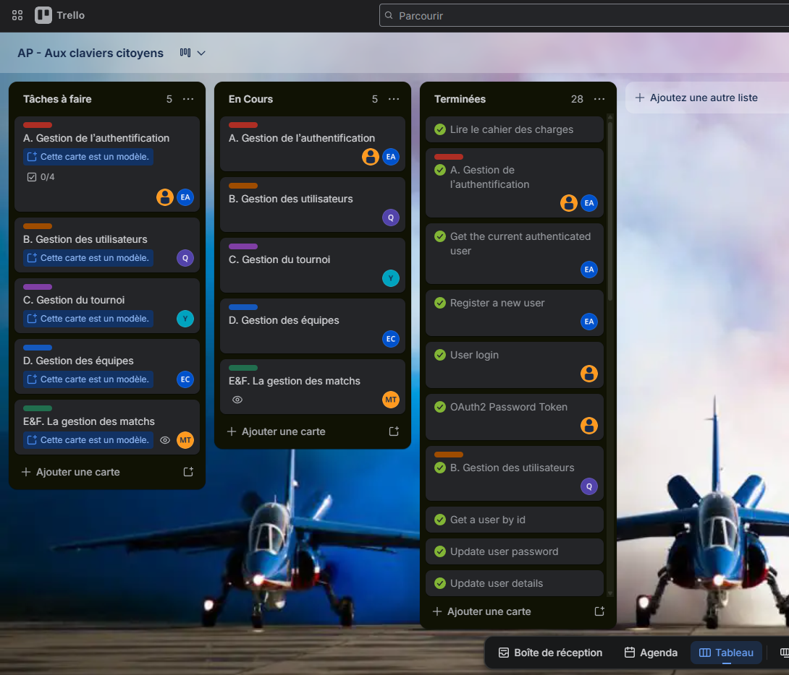
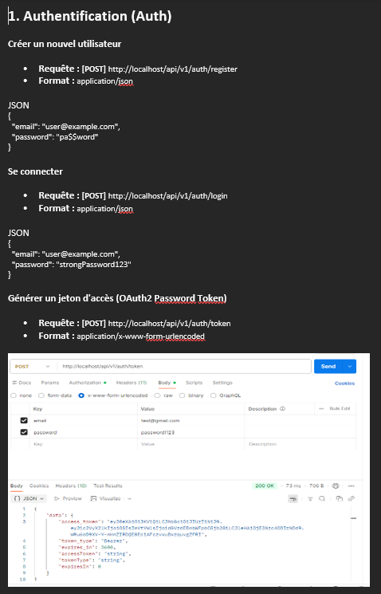
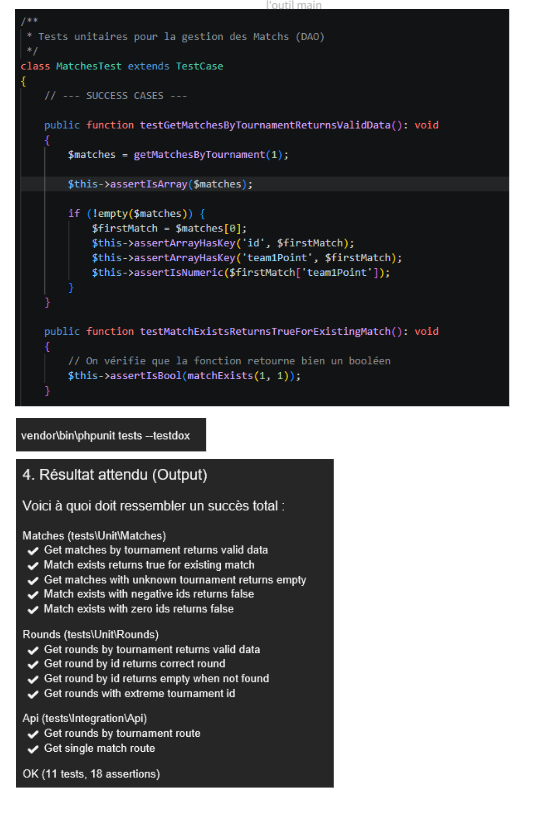

Aux Claviers Citoyens (ACC)

Contexte et Objectifs du Projet
Aux Claviers Citoyens est un projet de développement d'une application de e-sport. Dans le cadre de cette réalisation de groupe, ma mission s'est concentrée sur les modules E (Gestion des rounds) et F (Gestion des matchs). L'enjeu principal était de concevoir et tester des points d'accès (endpoints) capables de manipuler et de retourner des flux de données en temps réel.
Analyse réflexive des compétences mobilisées
Clique sur une compétence pour déplier l'analyse et afficher la preuve technique associée.
Travailler en mode projet
Application concrète :
Le projet Aux Claviers Citoyens a été réalisé en équipe de manière collaborative. Afin d'organiser efficacement la répartition des tâches et de suivre l'avancement des livrables, nous avons mis en place une méthodologie agile aidée par un outil de gestion Trello.
Dans ce cadre, j'ai découpé mes tâches personnelles liées aux modules E (Rounds) et F (Matchs) en sous-tâches. Chaque tâche est passée par différents états : À faire, En cours, et Terminé après validation.
Cette organisation a permis de garantir le respect de la date de rendu et d'identifier les problèmes de chaque personne du groupe.

Exemple de Gestion de projet avec Trello pour le projet ACCMettre à disposition des utilisateurs un service informatique
Application concrète :
Apres le développement de mes modules, j'ai réalisé avec mon groupe une documentation technique détaillée de l'API, incluant les spécifications des endpoints, les formats de données attendus, et les exemples d'utilisation. Cette documentation a été essentielle pour assurer une compréhension claire de l'API pour permettre de réaliser le front-end de l'application.

Exemple de la documentation technique PostmanApres le développement de mes modules, j'ai réalisé des tests unitaires pour vérifier que mes fonction attendues fonctionnent correctement. et pour simuler différents scénarios d'utilisation et m'assurer que les fonctions se comportaient comme prévu.

Exemple de tests unitaires réalisés pour mes fonctions